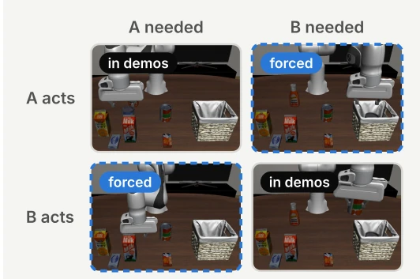
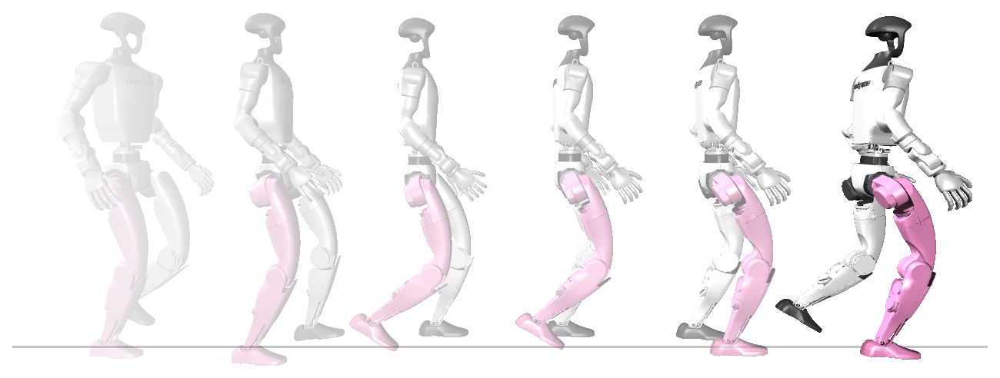
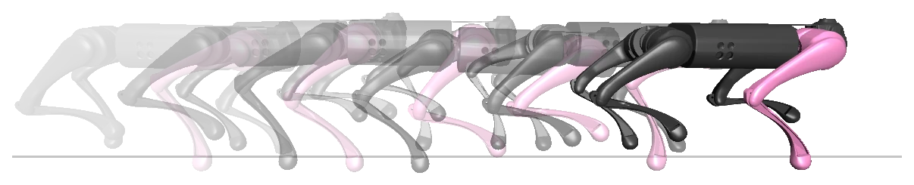
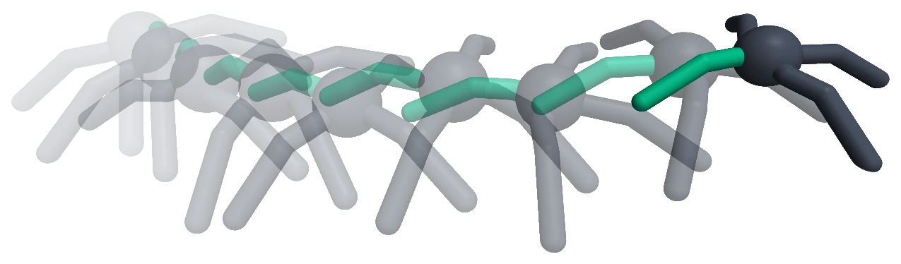
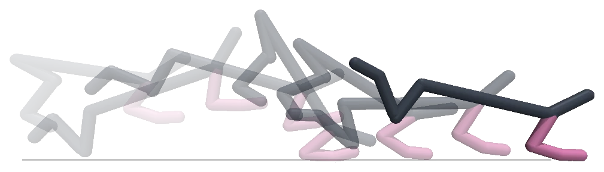

Demonstrations Never Go Back: Why Learned Selectors Keep the Wrong Expert
TL;DR
Problem. Robots that chain skills use a learned selector: a high-level policy that names the next subtask, or a gate that chooses among controllers. When a person undoes a step, the selector keeps the wrong skill. In LIBERO, routers moved on after a step was done for them in all but 6 of 1,467 episodes, and kept the wrong skill in 248 of 1,110 after an undo; two published VLAs (SmolVLA, π0.5) redid an undone step in 3% and 10% of episodes.
Insight. Demonstrations only move forward, so in the training data the skill that acts is always the skill that is needed. The selector learns to read who is acting as evidence of what is needed, and after an undo the wrong skill's own behaviour keeps confirming it: self-confirming selection. Swapping only the acting skill in the same undone state moved the routers' log-odds by 8.0 (pre-registered).
Approach. A forced recording, read from the moment of the change, measures lock-in before deployment. Off-path training data repairs it where the change is visible under the wrong skill; where the wrong skill's behaviour hides the change, the robot has to act to reveal it. Skills trained to resume turn recall into completion.
Result. In simulation, with predictions fixed before testing: the forced recording predicted live lock-in (mean error 0.15 against 0.63; AUC 0.74 to 0.95 against 0.40 to 0.73 for accuracy); off-path data cut never-recalled undo episodes from 147 of 416 to 15 of 424; and with resumable skills, covered routers completed 26 of 60 tasks after an undo, against 2 of 60. The same failure appears in modular controllers on a Franka Panda and four legged robots.
Forward, not back
In LIBERO-10, a Franka arm does subtask A and then subtask B, and a learned router picks which skill runs every ten steps. We changed the world in two ways while it worked. Done for you: a person finishes A for the robot. Undone for you: a person undoes A while B's skill is running. Eight routers, small MLPs and SmolVLM2 vision-language models, moved on after done for you in all but 6 of 1,467 episodes. After an undo, they kept running B in 248 of 1,110.
Two published VLA policies with no router, SmolVLA and π0.5, did the same. After an undo they redid A in only 3% and 10% of episodes, although each had done A earlier in the episode.
Who acts decides the call
Why would a router that sees the undone state keep the wrong skill? In the demonstrations, the skill that acts is always the subtask that is needed: the data fill only the diagonal of the table below. A router can therefore learn which skill is acting rather than which subtask is needed.

We tested this by intervention. From the same undone state, either B's skill kept acting or A's skill acted, with A needed in both, and we replayed both recordings through 48 new routers. With A's skill acting, routers trained on their own data gave A log-odds 8.0 higher (pre-registered; 95% interval 7.0 to 9.0). Almost none of it came from the robot's arm state; the camera images carried it.
Measuring it before deployment
Accuracy on held-out demonstrations cannot see this failure, because demonstrations never contain an undo; on the first routers it ranked the lock-ins below chance. A forced recording can: from held-out start states, make the change, keep the current skill acting, and read the router from that moment. Until the router switches, this recording is the live episode. Pre-registered on 48 new routers, it predicted each router's live lock-in rate with a mean error of 0.15, against 0.63 for a per-step baseline, and ranked live episodes at an AUC of 0.74 to 0.95 in each scene, against 0.40 to 0.73 for accuracy.
Fixing it
Off-path data repairs it. Adding forced episodes, labelled with the subtask that is needed, to the router's training data cut never-recalled undo episodes from 147 of 416 to 15 of 424 (a pre-registered trend).
Going back is not yet finishing: skills trained only forward cannot start from mid-task states, such as holding the moka pot. With a scripted return to the start pose, covered routers completed 42 of 55 tasks after an undo, against 4 of 52 for routers trained on their own data; the clip at the top is from these runs. Skills fine-tuned on segments recorded from interrupted states need no return: with them, covered routers completed 26 of 60 tasks, against 2 of 60.
The same failure in modular controllers
The same trap catches a gate that chooses among controllers by how well each controller's model predicts what the robot senses.
Take a quadruped that has learned two ways to walk: normally, and with a weak front leg. A common way to choose between such skills is to give each one a forward model, which predicts what the robot will sense next, and to hand control to the skill whose model predicts best.
Now the leg weakens. The limping skill takes over, as it should. Then the leg recovers. The limping skill is still in control, so everything the robot senses comes from limping. The normal-walking model only ever saw normal walking, so on this data its predictions look poor, and the gate keeps the limping skill. The robot goes on limping on a healthy leg.
The choice confirms itself: the skill in control produces the evidence on which every skill is judged. We call this self-confirming selection. People show something similar after an injury, called learned non-use: a patient keeps avoiding a limb after it has healed.
On walking robots and a carrying arm
It is not only about legs. A Franka Panda carries containers that look alike but hold different contents, and it has one carrying skill for each. When the contents change from a heavy solid to a liquid with no cue, standard selection settles on the skill for a solid of the same weight, and the liquid spills.
Standard selection
With our fix
Told what it holds
The robots
Besides the Panda, the project uses four walking robots, all in simulation. Partway through each run a leg weakens or stops working, with no warning, and the robot has to switch to the skill for that body.




Ghost images: each robot drawn at even intervals over one to four seconds, earlier poses fainter. The tinted leg is the impaired one.
What matters
- Forward, not back. Learned selectors handle the changes their data contained and miss the ones it did not: routers moved on after a step was done for them in all but 6 of 1,467 episodes, and kept the wrong skill in 248 of 1,110 after an undo. Two published VLAs rarely redid an undone step.
- Who acts decides the call. In the same state, a router's call follows whichever skill acts (8.0 log-odds, pre-registered), with or without the arm's state in its input.
- Measured before deployment. A forced recording, read from the moment of the change, predicts live lock-in; accuracy on demonstrations cannot.
- Model error versus hidden changes. Where the change is visible under the wrong skill, off-path data fixes it. Where the wrong skill's behaviour hides the change, no data can; the robot has to act to reveal it.
- Recall is not completion. The recalled skill must be able to resume from where it is handed the task.
- It is general. The same failure appears in LIBERO routers, in flat VLAs, and in modular controllers on a Franka Panda, HalfCheetah, Ant, and the Unitree Go1 and G1.
Takeaway
A selector trained on data its own experts produced learns who is acting as much as what the world needs. Test it by forcing the current expert through the change and reading the selector from that moment; train it on off-path states; and where the current behaviour hides the change, act to reveal it.
All results so far are in simulation, and most were pre-registered: the predictions were written and hashed before the runs. Next: a multi-task high level that writes the next subtask in language, and a Franka Panda with a person undoing steps.